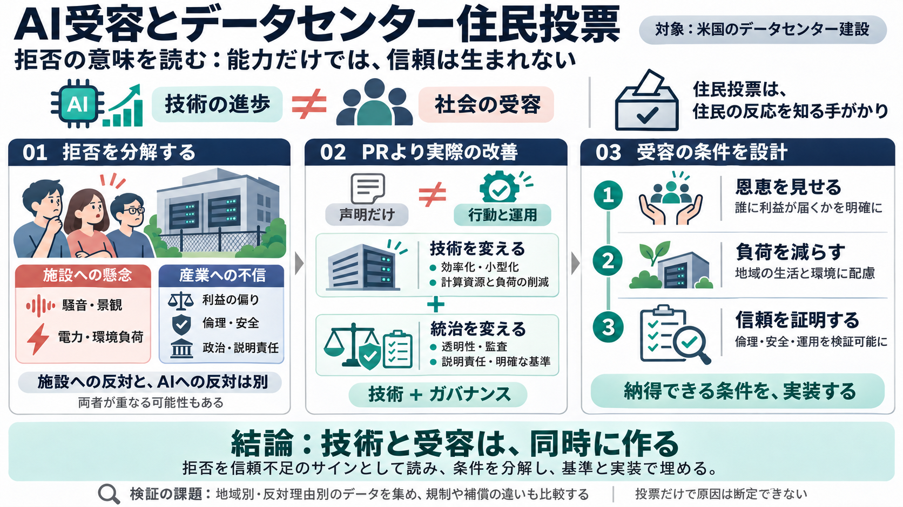

AI Data Center Boom Faces Backlash After US Election Results
# AI Data Center Boom Faces Backlash After US Election Results US voters are pushing back against AI data centers, rais…

# AI Data Center Boom Faces Backlash After US Election Results US voters are pushing back against AI data centers, rais…
Scientific American SubscribeSign In Read the November Issue: Social Media Addiction November 4, 2026 2min read Goo…
datacenters logo Policy, Land & Power 1 minRead # US midterm elections threaten AI data center projects Election vi…
President Trump has been a vocal supporter of AI companies and the data center build-out as a vehicle for economic growt…
“The revolt against data centers was one of the top issues of the 2026 election, and in a few years we will look back on…